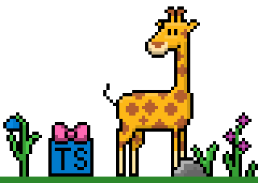

This is the TypeScript API reference for GJS — the GNOME JavaScript runtime. Browse the modules below to find detailed type information for GLib, GTK, GStreamer, and many other GNOME libraries.
All type definitions are auto-generated from GObject Introspection data using ts-for-gir and can be installed as NPM packages for use in your projects. You can also use ts-for-gir to generate the type definitions and this documentation yourself for any GIR module available on your system.
Each documented module is available as a pre-generated NPM package under the @girs scope. For example, to develop a GTK 4 application with GJS:
npm install @girs/gjs @girs/gtk-4.0 --save
import '@girs/gjs'
import '@girs/gjs/dom'
import '@girs/gtk-4.0'
import Gtk from 'gi://Gtk?version=4.0';
const button = new Gtk.Button();
All pre-generated packages can be found on gjsify/types.
GNOME Applications
GNOME Shell Extensions
Looking for a starting point? These example projects demonstrate how to use the TypeScript definitions with various bundlers:
More examples with screenshots and descriptions can be found in the ts-for-gir examples directory.
The following modules are documented on this site, grouped by category. Click on any module to browse its classes, interfaces, enums, functions, and constants.
GJS is a JavaScript runtime for the GNOME ecosystem. This package provides core type definitions for GJS built-in modules.
WebGL bindings for GJS.
D-Bus inter-process communication type definitions.
GIO provides a modern and easy-to-use VFS API, including file system abstraction, networking, D-Bus support, and application infrastructure.
Unix-specific GIO interfaces and utilities.
Windows-specific GIO interfaces and utilities.
GLib provides the core application building blocks for libraries and applications written in C. It provides the core object system used in GNOME, the main loop implementation, and a large set of utility functions for strings and common data structures.
Unix-specific GLib API extensions.
Windows-specific GLib API extensions.
Portable method for dynamically loading plug-ins.
The base type system and object class library, providing signal/callback handling, properties, and reference counting.
Windows API type aliases for GObject Introspection.
The GTK windowing system abstraction.
GDK backend for macOS.
GDK backend for Wayland.
GDK backend for Windows.
GDK backend for X11.
The GTK rendering API.
The GTK toolkit — primary library for constructing user interfaces in GNOME applications.
Pango is a library for laying out and rendering text, with an emphasis on internationalization.
Cairo rendering support for Pango.
A 2D graphics library with support for multiple output devices.
Image loading library.
OpenGL type definitions for GObject Introspection.
A thin layer of mathematical types for 3D libraries.
SVG rendering library.
X11 XFixes extension type definitions.
X11 core protocol type definitions.
A freely available software library to render fonts.
A text shaping engine — converts Unicode text to glyph indices and positions.
GStreamer Editing Services for non-linear video editing.
Framework for discovering and browsing media content.
Networking support for the Grilo media discovery framework.
Powerful framework for creating multimedia applications.
GStreamer app library.
GStreamer Audio Library.
GStreamer base plugin libraries.
GStreamer OpenGL integration library.
General application and plugin utility library.
High-level media playback API.
GStreamer SDP (Session Description Protocol) library.
GStreamer tag support library.
Support library for video operations.
WebRTC support for GStreamer.
Scene graph toolkit used by Mutter for rendering.
Low-level GPU graphics library used by Mutter.
GNOME volume control library.
Window management and compositor library for GNOME.
Mutter Toolkit utility library.
Core library of the GNOME Shell desktop.
Shell Extensions Helper window library.
GNOME Shell UI toolkit for building shell extensions.
Framework for accessing online accounts.
JavaScript engine used by WebKitGTK.
A full-featured port of the WebKit rendering engine for GTK.
Library for extensions running in WebKit's web process.
A library providing serialization and deserialization support for the JSON format.
JSON-RPC protocol library.
XML parsing and manipulation library.
Template rendering library for GLib.
SPARQL database and query library.
GObject wrapper for PKCS#11.
Cryptographic and certificate UI library.
Application-level toolkit for defining and handling authorization policies.
Polkit authentication agent library.
A library for accessing the Secret Service API of the freedesktop.org project.
Software metadata handling library.
Library for managing Flatpak installations.
GObject wrapper for libudev.
Operating system information database.
Desktop portals access library.
Desktop portals GTK 4 integration.
Building blocks for modern adaptive GNOME applications.
Accessibility Toolkit interfaces (legacy, superseded by AT-SPI).
Assistive Technology Service Provider Interface.
Deferred execution library for GLib.
GNOME desktop settings enumerations.
Geocoding and reverse geocoding helper library.
A GNOME library that extends GtkTextView with syntax highlighting, undo/redo, search and replace, a completion system, and other source code editing features.
Weather data access library.
A library for sending desktop notifications.
IDE panel and dock library for GTK.
Application plugin engine.
PDF rendering library.
A library providing a widget to display maps in applications.
Spell checking library for GTK.
Terminal emulator widget for GTK.
Window Navigator Construction Kit.